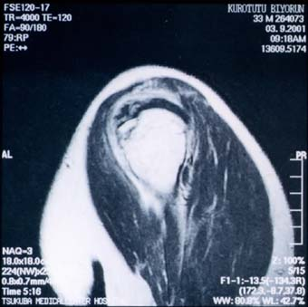

As I know that some people will ask
me, here is a little history of the TWMC.
On 9 March 1998, Kouichi posted the
following mail on TAIRA:
Dear TAIRAites,
"I am looking for groups that
enjoy hiking and backpacking. I am from
Seattle and have some experiences of these activities. I used
to belong
to the group called the Mountaineers in Seattle. I would also
like to
enjoy these activities in Japan. If you know or belong to this
kind of
groups, please let me know.
Thank you for your help.
Kouichi Iwasaki"
I like the way he says that he is from
Seattle!!!
One of the people who responded to
this mail was John Payne, and a small group
went walking one weekend shortly after this. I already knew John
at this time,
and remembered Kouichi's mail, so he told me that he was meeting
Kouichi in
Tokyo to go to Kouichi's favourite outdoor shop in Yokohama, and
invited me to
come along. This was on Sunday 26 April, and on the train coming
back home, we
discussed setting up a walking club and coined the name TWMC.
On Wednesday 29
April, we had our first meeting in Gold Rush. Four people attended
that
meeting, and the first committee (Chairman - Kouichi, Secretary
- John,
Treasurer - me) was formed. On 9 May, John set up the mailing
list, and on 23
and 24 May, we went for our first walk. Within a couple of weeks,
we were
completely astonished at the interest we had generated.
Luckily, there were no serious injuries
yet on TWMC trips. In fact, only 2 are worth mentioning.
Paul popped his knee on the Oze trip
of 1998, and he promised to provide MRI scans of his knee for
this page.
The other one is Björns fall on
the 2001 downhill skiing trip. He managed to fall on the easiest
part of
the easiest slope of the Alts resort on Bandai-san, where in fact
the only difficulty is not to stop.
It was said that he was looking at some cute Japanese girls but
this account was denied by Björn. It is
undeniable, however, that he had a second fall at the very same
place a few descents later when a really
cute snowboarding girl bumped into him from behind.
Be this as it may, below is an MRI
scan of his right upper arm, a vertical slice from the front (left)
to the back (right).
After some confusion (the doctors initially scared Björn
shitless by diagnosing he had torn his rotator cuff) it
turned out that the arm was "only" broken after all,
though in a somewhat awkward way. You can see that
a chunk broke out off the upper arm bone opposite to the joint
with the shoulder. The white blob in the
centre of the image is the bone, the broken out piece is visible
to the upper left of it.

Also note the interesting back translation
of Björns name from Katakana into Romaji.
Klotz Björn became Kurotutu Biyorun.